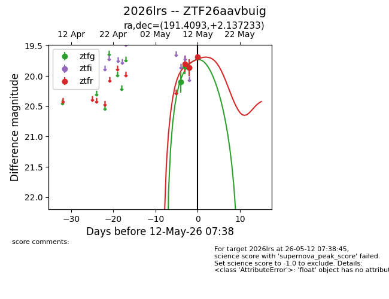
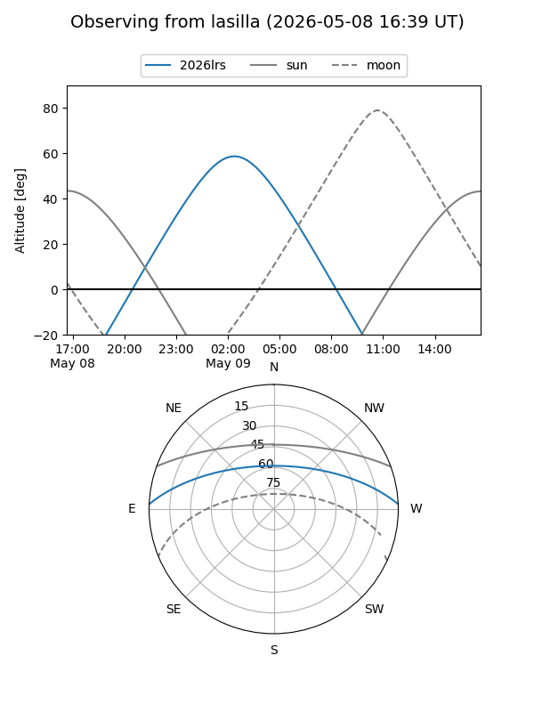
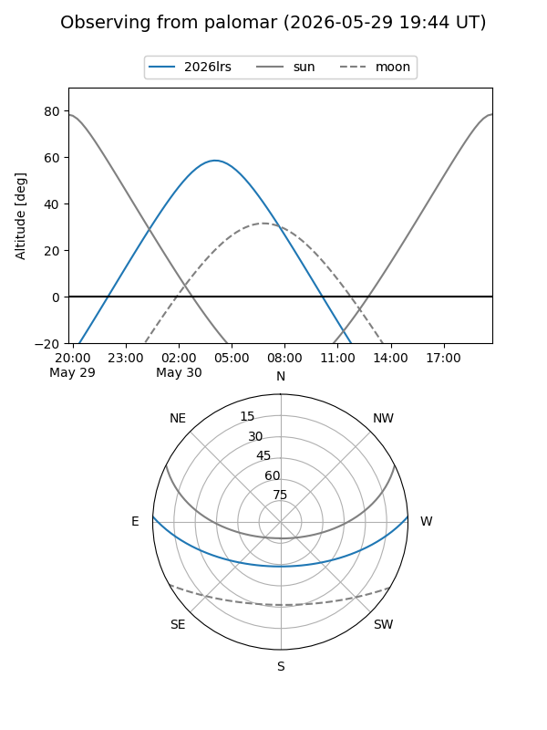
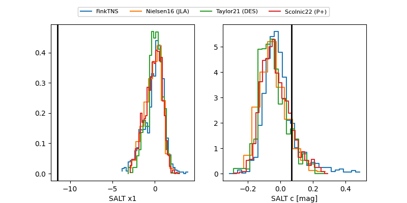

2026lrs
Target 2026lrs at 2026-05-12 07:41
Aliases and brokers:
FINK: link
Lasair: link
ALeRCE: link
TNS: link
YSE: link
alt names
ZTF26aavbuig (ztf,fink_ztf)
2026lrs (tns,yse)
Coordinates:
equatorial (ra, dec) = 191.4093,+2.13723
equatorial (HMS+DMS) = 12:45:38.22,+02:08:14.04
galactic (l, b) = (299.5049,+64.97037)
Flags:
Photometry:
last ztfg=19.86, ztfr=19.69
3 ztfg, 3 ztfr detections
Lightcurve

Visibility


Additional plots
